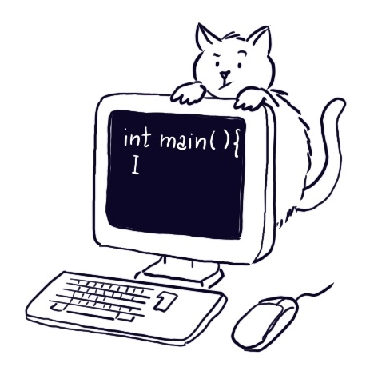

Informatica A

Ingegneria Matematica, PoliMi, 2026/2027
- Cartella condivisa con le slide e il materiale delle lezioni
- Setup dell’ambiente di sviluppo: Windows 10 & Mac, Windows 11
- Programma del corso
Calendario
L’orario settimanale delle lezioni è indicativamente:
- Lunedì, 14:30–17:15 in Aula 9.0.1
- Martedì, 8:30–12:15 in Aula 3.1.2
- Mercoledì, 16:30–18:15 in Aula T.2.1
- Venerdì, 10:30–13:15 in Aula B.3.4
Il calendario sottostante riporta date, aule ed eventuali variazioni o lezioni di recupero e costituisce il riferimento aggiornato per il corso.
Esercitazioni
Le esercitazioni del corso sono tenute dal Dr. Luca Alessandrini. Il materiale delle esercitazioni, gli esercizi proposti e le relative soluzioni sono disponibili sulla pagina delle esercitazioni.
Laboratori
I laboratori sono dedicati alla programmazione in C e allo svolgimento guidato di esercizi. Calendario e materiale dei laboratori
Tutorati
Durante il semestre sono previsti incontri di tutorato per esercitarsi sugli argomenti del corso e prepararsi alle prove d’esame. Calendario e informazioni sui tutorati
Modalità d’esame
L’esame consiste in una prova scritta seguita da una prova orale.
Prova scritta
La prova scritta si svolge al computer. Gli esercizi vengono proposti tramite Microsoft Forms e ciascuno studente deve utilizzare il proprio PC per sviluppare le soluzioni e caricare sul form il codice prodotto.
Per gli esercizi di programmazione ci si aspetta che il codice consegnato compili e venga eseguito correttamente. È quindi importante arrivare all’esame con un ambiente di sviluppo correttamente installato e configurato.
Gli unici IDE ammessi durante la prova sono Dev-C++, Code::Blocks e Xcode.
Durante la prova scritta è possibile utilizzare la dispensa del corso.
Per essere ammessi alla prova orale è necessario ottenere almeno 10 punti complessivi nei tre esercizi di programmazione in C.
Prova orale
Per la prova orale tipicamente viene proposto un esercizio da risolvere su carta, che viene successivamente discusso con il docente.
Prova in itinere
Durante il semestre è prevista una prova in itinere (compitino). Il superamento della prova consente di non svolgere il primo esercizio di programmazione della prova scritta negli appelli di gennaio e febbraio. Il beneficio è valido esclusivamente per questi due appelli.
Esami integrativi
Gli studenti che devono sostenere un esame integrativo a seguito della convalida di un esame di Informatica di un altro corso di studi devono contattare il docente per concordare il programma della prova.
Usalmente la prova riguarda memoria dinamica (liste e alberi) e SQL, argomenti trattati nella seconda parte del corso. Poiché il corso utilizza il linguaggio C, a chi proviene da corsi basati su altri linguaggi è consigliato seguire le lezioni almeno a partire dall’introduzione di puntatori e funzioni in C, indicativamente dalla seconda metà di ottobre.
Il voto finale è calcolato come media pesata sui CFU tra il voto dell’esame convalidato e quello ottenuto nella prova integrativa.
Temi d’esame
Per gli appelli dell’ultimo anno sono disponibili i temi d’esame.
2025/2026
Prima prova: Tema · Soluzione
Gennaio: Tema · Soluzione
Febbraio: Tema · Soluzione
Giugno: Tema
Luglio: Tema
Settembre: Tema
Archivio TDE
2024/25: Prima prova · Gennaio · Febbraio · Giugno · Luglio · Settembre
2023/24: Prima prova · Gennaio · Febbraio · Giugno · Luglio · Settembre
2022/23: Prima prova · Gennaio · Febbraio · Giugno · Luglio · Settembre
2021/22: Gennaio · Febbraio · Giugno · Luglio · Settembre
Per temi ancora precedenti si rimanda alla pagina storica del corso.
Esami integrativi
Gli studenti che devono sostenere un esame integrativo a seguito della convalida di un esame di Informatica di un altro corso di studi devono contattare il docente per concordare il programma della prova. Tipicamente la prova riguarda memoria dinamica (liste e alberi) e SQL, argomenti trattati nella seconda parte del corso. Poiché il corso utilizza il linguaggio C, a chi proviene da corsi basati su altri linguaggi è consigliato seguire le lezioni almeno a partire dall’introduzione di puntatori e funzioni in C. Il voto finale è calcolato come media pesata sui CFU tra il voto dell’esame convalidato e quello ottenuto nella prova integrativa.
Risorse aggiuntive
- Pagina del corso degli anni precedenti curata dal Prof. Boracchi.
- Dispensa a cura del Prof. Barenghi, che copre i primi argomenti del corso.
- The C Programming Language.
- Un compilatore online, utile per iniziare a familiarizzare con il C. Cercate tuttavia di iniziare a utilizzare un IDE il prima possibile.
- Peter Norvig, Teach Yourself Programming in Ten Years.
- George Polya, Come si risolve un problema.